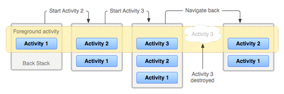
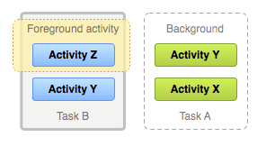

Activity及其生命周期
一、Activity初步认识：【创建、配置、启动Activity】
(一)、创建Activity：
- 创建Activity：继承于Activity或其子类，重写onCreate()方法。
(二)、Activity的注册配置：
作为四大组件之一的Activity，必须要在AndroidManifest清单文件中进行注册。如果没有配置，而又在程序中启动了该Activity，将抛出异常（ActivityNotFoundException）。
(三)、启动Activity：
- 在Android应用里各组件之间通信使用Intent。一个Activity通过Intent来表达自己的“意图”。
- 常用有两种方式：
-
- Intent intent = new Intent(MainActivity.this , NextActivity.class);
- Intent intent = new Intent();
-
- intent.setClass(MainActivity.this , NextActivity.class);
- 常用启动方式有两种：
- startActivity();
- startActivityForResult();
(四)、Activity之间交换数据：
-
第一种方式：
-
- 甲页面利用intent对象的putExtra()方法传值，乙页面利用getStringExtra()、getIntExtra()等系列方法来一一接收值；
-
第二种方式：【常用】
-
- 甲页面利用bundle对象来保存所有需要传递的数值，通过intent的putExtras()方法传值，乙页面利用intent对象的getExtras()方法返回bundle对象，将所有接收的数据放在bundle对象中，利用bundle的get系列方法一一去获取数据。
【备注：】如果甲页面使用putExtras()方法传值，则乙页面使用getExtras()接收值。如果甲页面使用putExtra()方法传值，则乙页面要使用getBundleExtra()方法接收值。
-
Activity之间传递对象
-
- Serializable的用法
- Parcelable的用法
二、Activity——调用另一个Activity并返回结果：
(一)、概念：
甲页面调用乙页面，当用户在乙页面完成任务后，程序自动返回到甲页面，而甲页面必须能够获取到用户在完成乙页面后传递的数据结果。
(二)、实现：
与普通的页面交换数据不同的是，要使用startActivityForResult()方法来启动另一个Activity。
三、Activity生命周期：
1、Activity一生中有七种不同的状态。
- onCreate()
- onStart()
- onResume()
- onPause()
- onStop()
- onRestart()
- onDestroy()
A、七个生命周期组合：
- onCreate、onStart、onResume：启动应用程序
- onPause、onStop：失去焦点
- onRestart、onStart、onResume：重新获得焦点
- onPause、onStop、onDestroy ：退出应用程序
B、七个生命周期按阶段划分：
- onCreate() — onDestroy() 完整生命周期 The entire lifetime
- onStart() — onStop() 可见生命周期 The visible lifetime：
- onResume() — onPause() 前沿生命周期(焦点生命周期) The foreground lifetime：
2、定义生命周期的作用：
- ①当用户接一个电话或切换到另一个程序不会崩溃
- ②当用户后台运行程序时不会销毁有价值的系统资源
- ③当用户离开再返回你的应用时不会丢失用户的进程
- ④当手机屏幕进行横竖屏切换的时候不会崩溃或者丢掉用户的进程
3、生命周期的金字塔图

(三)、实例代码操作：
模仿以下操作，观察输出日志，找寻生命周期方法依次回调的规律：
- 打开主界面，后退键退出
- 打开主界面，进入第二个页面
- 打开主界面，模拟电话进入及挂机，再次显示主界面
- 打开主界面，HOME键退出
- 打开主界面，HOME键退出，再次启动app
- 打开主界面，点击该界面中捆绑退出事件的按钮后退出
- 打开主界面，切换横屏竖屏。
- 生命周期执行的顺序：
04-23 03:51:29.750: I/MainActivity(741): ==MainActivity onCreate执行了 04-23 03:51:29.759: I/MainActivity(741): ==MainActivity onStart执行了 04-23 03:51:29.759: I/MainActivity(741): ==MainActivity onResume执行了 04-23 03:52:04.780: I/MainActivity(741): ==MainActivity onPause执行了 04-23 03:52:04.791: I/MainActivity(741): ==MainActivity onStop执行了 04-23 03:52:04.791: I/MainActivity(741): ==MainActivity onDestroy执行了 04-23 03:52:05.200: I/MainActivity(741): ==MainActivity onCreate执行了 04-23 03:52:05.209: I/MainActivity(741): ==MainActivity onStart执行了 04-23 03:52:05.329: I/MainActivity(741): ==MainActivity onResume执行了
四、任务与回退栈：
（一）、任务Task：
1、概念：
一个任务（task）就是在执行某项工作时与用户进行交互的Activity的集合。这些Activity按照被打开的顺序依次被安排在一个堆栈中（回退栈）。
2、主屏页面：
设备的主屏是大多数任务的启动位置，当用户触摸一个应用程序启动器图标（或者app快捷图标），应用程序的任务就会在前台显示。如果相关应用程序的任务不存在，那么就会有一个新的任务被创建，并且应用程序打开的“主”Activity会作为任务中的根Activity。
（二）、回退栈：
1、概念：
在当前的Activity启动了另一个Activity时，这个新的Activity被放到了堆栈的顶部，并且带有焦点。前一个Activity并没有消失，而是保存在回退栈中，此时它处于停止状态。
当用户按下回退按钮时，当前的Activity会被从回退栈的顶部弹出（这个Activity被销毁），而前一个Activity被恢复。堆栈中的Activity不会被重新排列。因此，回退栈的操作跟后进先出的对象结构是一样的。
在用户按下回退按钮时，当前Activity被销毁，并且前一个Activity被恢复。如果用户继续按回退按钮，那么回退栈中的每个Activity会被依次弹出，前一个Activity会被显示，直到用户返回主屏（或者返回到任务开始时运行的那个Activity）。当所有的Activity从回退栈中被删除时，这个任务就不再存在了。
图1：用一个时间表显示了当前回退堆栈中的Activity之间在每个时间点的处理过程

2、多个任务：

图2. 两个任务：任务B在前台接受用户交互，而任务A则在后台等待被恢复。
【PS：】后台中可以同时拥有多个任务，但是如果用户同时运行了很多后台任务，系统为了回收内存可能销毁一些后台的Activity，从而导致Activity的状态丢失。
因为回退堆栈中的Activity不曾被重新排列，因此如果允许用户从多个Activity中启动一个特殊的Activity，那么就会创建一个新的Activity实例，并且在堆栈的顶部弹出（而不是把之前的Activity实例带到堆栈的顶端）。这样在你的应用程序中一个Activity就可能被实例化多次（甚至来自不同任务）。
（三）、Activity和Task的默认行为的总结：
1、当Activity A启动Activity B时，ActivityA被终止，但是系统保留了它的状态（如滚动条的位置和录入表单的文本）。如果用户在Activity B中按回退按钮，Activity A会使用被保存的状态来进行恢复。
2、当用户通过按主页(Home)按钮离开一个任务时，当前的Activity会被终止，并且被放入后台。系统会保留任务中每个Activity的状态。如果用户随后通过选择启动图标来恢复这个任务，那么任务会来到前台，并且恢复了堆栈顶部的Activity。
3、如果用户按下回退按钮，当前的Activity会从堆栈中被弹出并且被销毁。堆栈中的前一个Activity会被恢复。Activity被销毁时，系统不会保留Activity的状态。
4、Activity能够被实例化多次，甚至来自其他任务。
五、Activity启动模式：
在Android中每个界面都是一个Activity，切换界面操作其实是多个不同Activity之间的实例化操作。在Android中Activity的启动模式决定了Activity的启动运行方式。Android总Activity的启动模式分为四种：
（一）、Activity启动模式设置：
（二）、Activity的四种启动模式：
- 1、standard（备注：standard是系统默认的启动模式。）
标准启动模式，每次激活Activity时都会创建Activity，并放入任务栈中。每个窗体的getTaskId()保持不变，但是this.hashCode()发生改变。
- 2、singleTop
如果在任务的栈顶正好存在该Activity的实例， 就重用该实例，而不会创建新的Activity对象，不过它会调用onNewIntent()方法。如果栈顶部不存在就会创建新的实例并放入栈顶(即使栈中已经存在该Activity实例，只要不在栈顶，都会创建实例)。会回调onNewIntent()方法。
- 3、singleTask
如果在栈中已经有该Activity的实例，就重用该实例(会调用实例的onNewIntent())。重用时，会让该实例回到栈顶，因此在它上面的实例将会被移除栈。如果栈中不存在该实例，将会创建新的实例放入栈中。
和singleTop在名字上即可看出区别，即singleTop每次只检测当前栈顶的Activity是否是我们需要请求创建的，而singleTask则会检测栈中全部的Activity对象，从上向下，如果检测到是我们所请求的则会消灭此Activity对象上面的对象，直接把检测到的我们需要的Activity置为栈顶。
- 4、singleInstance
与singleTask模式的区别是存放singleInstance模式窗口对象的回退栈不能有其他任何窗口对象。因此如果该窗口不存在，则要新建任务来存放该singleInstance模式窗口。也就是说getTaskId()会发现任务id发生了变化。
此启动模式和我们使用的浏览器工作原理类似，在多个程序中访问浏览器时，如果当前浏览器没有打开，则打开浏览器，否则会在当前打开的浏览器中访问。此模式会节省大量的系统资源，因为他能保证要请求的Activity对象在当前的栈中只存在一个。
总结：在实际开发Android项目时，巧妙的设置Activity的启动模式会节省系统开销和提高程序运行效率。